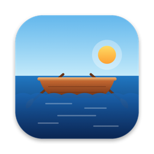

Privacy policy
Rowboat: SQLite Editor · updated 8 November 2026
Rowboat collects nothing
Rowboat has no accounts, no analytics, no advertising and no network connections of its own. Your databases, queries, history, snippets and settings stay on your Mac.
It reads and writes only the files you open or save, as macOS's App Sandbox allows. It keeps its own settings and query tabs inside its sandbox container on your Mac.
No data is collected by the developer or shared with anyone. If you contact support through GitHub, what you write there is handled under GitHub's privacy statement.
Datenschutz
Rowboat sammelt nichts: kein Konto, keine Analyse, keine Werbung und keine eigenen Netzwerkverbindungen. Ihre Datenbanken, Abfragen und Einstellungen bleiben auf Ihrem Mac. Rowboat liest und schreibt nur die Dateien, die Sie öffnen oder sichern.
Contact
Questions about this policy: open an issue. Developer: Lars Tray.